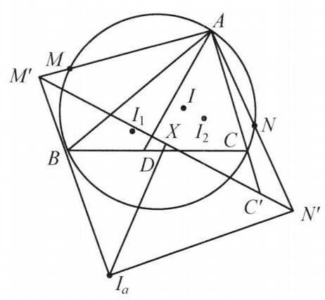

101 例 6：反演变换与圆过定点证明
101.1 题目
给定 \triangle {ABC} ，点 D 为边 {BC} 上的一个动点， \triangle {ABC} ， \triangle {ABD} ， \triangle {ACD} 的内心分别为 I ， {I}_1 ， {I}_2 ， \triangle {IA}{I}_1 ， \triangle {IA}{I}_2 的外接圆与 \triangle {ABC} 的外接圆分别交于异于点 A 的点 M, N . 证明: 直线 {MN} 过一个定点.

图 7-5
101.2 参考解答
如图 7-5,以 A 为反演中心, \sqrt{{AB} \cdot {AC}} 为反演半径进行反演变换. 设 {I}_a 为 \triangle {ABC} 的 A - 旁心,则点 I 的反演像为 {I}_a . 设点 B, C 的反演像分别为 {B}^{\prime },{C}^{\prime } ,则点 M, N 的反演像 {M}^{\prime },{N}^{\prime } 均在直线 {B}^{\prime }{C}^{\prime } 上. 圆 {ABC} 的反演像为直线 {B}^{\prime }{C}^{\prime } . 圆 {IAM} ,圆 {IAN} 的反演像分别为直线 {I}_a{M}^{\prime },{I}_a{N}^{\prime } .
设圆 {IAM} 和圆 {IAN} 的圆心分别为 {O}_1,{O}_2 ,则
\angle {O}_1{AI} = {90}^{ \circ } - \angle A{I}_{1}I,
\angle {O}_2{AI} = {90}^{ \circ } - \angle A{I}_{2}I
而
\angle A{I}_{1}I = {90}^{ \circ } - \frac{1}{2}\angle {ADB},
\angle A{I}_{2}I = {90}^{ \circ } - \frac{1}{2}\angle {ADC}.
所以
\angle {O}_{1}A{O}_2 = \angle {O}_1{AI} + \angle {O}_2{AI}
= {180}^{ \circ } - \left( {{90}^{ \circ } - \frac{1}{2}\angle {ADB}}\right) - \left( {{90}^{ \circ } - \frac{1}{2}\angle {ADC}}\right)
= \frac{1}{2}\left( {\angle {ADB} + \angle {ADC}}\right)
= {90}^{ \circ }\text{ . }
即圆 {O}_1 与圆 {O}_2 正交，由反演变换的保角性知 \angle {M}^{\prime }{I}_a{N}^{\prime } = {90}^{ \circ } . 设 {I}_a 在直线 {B}^{\prime }{C}^{\prime } 上的射影为点 X ，则 \overline{X{M}^{\prime }} \cdot \overline{X{N}^{\prime }} = - {\overline{X{I}_{a}}}^{2} 为定值.①
下面只需证明: \triangle A{M}^{\prime }{N}^{\prime } 的外接圆过异于 A 的定点.②
由①知点 X 对 \triangle A{M}^{\prime }{N}^{\prime } 的幂为定值，故这组圆 A{M}^{\prime }{N}^{\prime } 为共轴圆， {AX} 为根轴，于是它们过除 A 外的另一个定点. 原问题得证.
注:多圆过同一点的问题，常常考虑利用反演变换将其转化为直线型问题去处理.
101.3 解题思路与分析
这份证明之所以让人觉得“费解”，是因为竞赛教材通常会采用“倒果为因”的精简写法：它把探索过程中最自然的思考桥梁抽掉了，直接把最后整理出的最短逻辑链条抛给你。
如果把数学家的草稿纸还原出来，这个证明并不是靠“灵光一现”硬凑出来的，而是由四个非常标准的思维套路（破题、找不变量、建子模型、翻译结论）环环相扣推出来的。我们可以按探索的真实顺序来拆解它是怎么想出来的：
101.3.1 第一步：破题——为什么要以 A 为中心、\sqrt{AB\cdot AC} 为半径反演？
1. 看到“多圆共点”，条件反射用反演 读题时你会发现，题目里出现了三个圆：\odot(ABC)、\odot(IAI_1)（即圆 IAM）、\odot(IAI_2)（即圆 IAN），而这三个圆全都经过同一个定点 A（后两个圆甚至还同时经过定点 I）。 在平面几何中，圆与圆相交很难处理，但直线与直线相交很容易处理。以公共点 A 为反演中心进行反演，所有过点 A 的圆都会瞬间变成不经过 A 的直线！ * 原来的大圆 \odot(ABC) \longrightarrow 变成一条定直线 B'C'； * 原来的两个动圆 \odot(IAM)、\odot(IAN) \longrightarrow 变成两条过定点 I'（I 的反演像）的动直线 I'M' 和 I'N'； * 原来的交点 M, N \longrightarrow 变成这两条动直线与定直线 B'C' 的交点 M', N'。 * 求证目标的转化：原题要证“动直线 MN 过定点”，反演后直线 MN 变成圆 \odot(AM'N')，所以等价于证“动圆 \odot(AM'N') 除点 A 外还过另一个定点”。
2. 半径 \sqrt{AB\cdot AC} 是必须的吗？ 其实完全不是！ 你哪怕随便取反演半径为 1，把 I 反演成一个不知名的定点 I'，后面的所有证明一字不改也完全成立。 那作者为什么非要选 \sqrt{AB\cdot AC}？因为在竞赛几何著名的“\sqrt{bc} 反演”中，有一个熟知结论：内心 I 和 A-旁心 I_a 都在 \angle A 的平分线上，且由 \triangle ABI \sim \triangle AI_aC 可得 AI \cdot AI_a = AB \cdot AC。选这个半径，纯粹是为了让 I 的反演像刚好落在现成的旁心 I_a 上，省去自己新设一个字母 I'，属于作者的“炫技式优雅”。
101.3.2 第二步：核心突破——怎么想到去算 \angle O_1 A O_2 = 90^\circ？
反演做完后，图形变得极其简单：平面上有一个定点 I_a 和一条定直线 B'C'，从 I_a 引出两条动直线 I_aM' 和 I_aN' 交定直线于 M', N'。
这时候你会怎么想？ 既然 D 在动，M' 和 N' 也在动，但它们最后却能决定一个定点，说明这两条动直线 I_aM' 和 I_aN' 之间一定存在某种绑定关系！ 两条过同一定点 I_a 的直线，最核心的关系是什么？当然是它们的夹角 \angle M'I_aN'！
于是问题自然变成了：怎么求 \angle M'I_aN'？ 这里有两个完全等价的思路（教材选了第一种，但第二种其实更直观）：
教材的思路（利用反演的保角性）： 两条直线 I_aM' 与 I_aN' 的夹角，就等于反演前两个圆 \odot O_1 与 \odot O_2 在交点 A 处的夹角，也就是两条半径的夹角 \angle O_1 A O_2。 而在圆 O_1 中，AI 是弦，\angle AI_1I 是弦 AI 所对的圆周角。根据圆周角定理和等腰三角形 \triangle O_1AI 的性质，底角 \angle O_1AI 自然等于 90^\circ - \angle AI_1I。
更直观的思路（根本不需要引入圆心 O_1, O_2）： 设 I_1 反演后的点为 I_1'（它在直线 I_aM' 上）。根据反演的基本相似性质，\triangle AII_1 \sim \triangle AI_1'I_a（反向相似），所以直接就有： \angle AI_aM' = \angle AI_aI_1' = \angle AI_1I 同理，\angle AI_aN' = \angle AI_2I。因此两直线夹角就是 \angle M'I_aN' = \angle AI_1I + \angle AI_2I（或其补角）。
接下来，为什么 \angle AI_1I 和 \angle AI_2I 这么好算？ 这利用了三角形内心的两个最基础的“肌肉记忆”性质： 1. 三点共线：BI 平分 \angle B，BI_1 也平分 \angle B，所以 B, I_1, I 三点共线！（同理 C, I_2, I 共线）。 2. 内心张角公式：在 \triangle ABD 中，I_1 是内心，必有基本公式 \angle BI_1A = 90^\circ + \frac{1}{2}\angle ADB。因为 B, I_1, I 共线，它的邻补角就是： \angle AI_1I = 180^\circ - \angle BI_1A = 90^\circ - \frac{1}{2}\angle ADB 同理 \angle AI_2I = 90^\circ - \frac{1}{2}\angle ADC。由于 \angle ADB + \angle ADC = 180^\circ，两角相加恰好消去了动点 D 的影响，得出定值 90^\circ！
101.3.3 第三步：架设桥梁——垂足 X 和“射影定理”是怎么冒出来的？
发现 \angle M'I_aN' = 90^\circ 后，原题所有的复杂背景都可以扔掉了，它彻底退化成了一个经典的初中几何子模型：
子模型： 已知定点 A、定点 I_a 和定直线 L（即 B'C'）。一个直角顶点固定在 I_a 的直角 \angle M'I_aN' = 90^\circ 绕着 I_a 旋转，两条直角边交定直线 L 于 M', N'。求证：\odot(AM'N') 必过除 A 外的另一个定点。
面对这个子模型，为什么会立刻想到作垂线 I_aX \perp B'C'？ 1. 寻找真正的不变量：直角三角形 \triangle M'I_aN' 的两个锐角顶点 M', N' 在定直线 B'C' 上滑动，而直角顶点 I_a 是固定的。连接一个“定点”和一条“定直线”，唯一确定的几何量就是过 I_a 向定直线作的垂线段 I_aX！点 X 是绝对不动的定点，XI_a 的长度也是定值。 2. 直角三角形 + 斜边上的高 = 射影定理： 一旦画出斜边上的高 I_aX，初中课本里的射影定理就会自动跳出来： XM' \cdot XN' = XI_a^2 \quad (\text{定值}) （加上方向符号就是 \overline{XM'} \cdot \overline{XN'} = -\overline{XI_a}^2）。
101.3.4 第四步：收尾揭秘——“共轴圆与根轴”到底在说什么？
证明的最后一段写得非常高冷：“点 X 对 \triangle AM'N' 的外接圆的幂为定值，故这组圆为共轴圆，AX 为根轴，于是过定点”。
其实，根本不需要用“共轴圆、根轴”这种高等术语来吓人，它的本质就是初中的相交弦定理！我们可以用两行极其好懂的话把它翻译过来：
- 连接两个定点 A 和 X，设直线 AX 与外接圆 \odot(AM'N') 的另一个交点为 K。
- 在 \odot(AM'N') 中，弦 AK 与弦 M'N' 相交于点 X，直接由相交弦定理得： XA \cdot XK = XM' \cdot XN' = XI_a^2 即： XK = \frac{XI_a^2}{XA}
- 因为 A, X, I_a 全是定点，XA 和 XI_a 的长度都是固定不变的常数！所以点 K 到定点 X 的距离 XK 是定值，且 K 在定直线 AX 上——这不就说明点 K 是一个死死钉住的定点吗？
教材里说的“共轴圆、AX 为根轴”，翻译成人话就是“不管 M', N' 怎么动，圆 \odot(AM'N') 和定直线 AX 的第二个交点 K 永远算出来是同一个位置”。然后再把定点 K 反演回去，就是原题中直线 MN 所过的定点。
101.3.5 总结：还原数学家的思维导图
如果倒过来从目标往回看，整道题的破译链条其实非常丝滑：
\begin{aligned} \text{看到三圆共点 } A &\xrightarrow{\text{套路反演}} \text{化圆为线，目标变为证 } \odot(AM'N') \text{ 过定点} \\ &\xrightarrow{\text{寻找约束}} \text{探求两条动直线 } I_aM', I_aN' \text{ 的夹角} \\ &\xrightarrow{\text{内心张角}} \text{算出夹角恰好恒为 } 90^\circ \text{（消去动点 } D\text{）} \\ &\xrightarrow{\text{射影定理}} \text{作斜边高 } I_aX\text{，得到定值 } XM' \cdot XN' = XI_a^2 \\ &\xrightarrow{\text{相交弦定理}} \text{连 } AX \text{ 交圆于 } K\text{，由 } XA\cdot XK = XI_a^2 \text{ 锁定定点 } K \end{aligned}
你看，只要把教材里省略的“转化动机”和被“共轴圆”包装掉的“相交弦定理”拆开，每一步都是顺理成章的常规操作。
101.4 分步证明
101.4.1 步骤 0：已知构形与题目条件
给定锐角 △ABC 及其外接圆 ⊙(ABC)（圆心为 O）。点 D 为底边 BC 上的任意动点。记 △ABC、△ABD 与 △ACD 的内心分别为 I、I₁ 与 I₂。作圆 ⊙(IAI₁) 与圆 ⊙(IAI₂)，它们与 △ABC 的外接圆分别交于异于 A 的动点 M 和 N。待证核心目标：连结直线 MN，求证当点 D 在边 BC 上移动时，直线 MN 恒过一个与 D 无关的定点 P₀。
101.4.2 步骤 1：外接圆弧中点 E 与鸡爪定理反演对偶
设外接圆劣弧 BC 的中点为 E。由经典的鸡爪定理，有 EB = EC = EI。进一步，设 △ABC 的 A-旁心为 Iₐ。由于内角平分线与外角平分线垂直（∠IBIₐ = 90°），且 A, I, E, Iₐ 共线于角平分线上，因此：E 恰为线段 IIₐ 的中点，且满足广义鸡爪关系：EB = EC = EI = EIₐ考虑鸡爪圆 ⊙(E) 的割线关系或相似三角形 △ABI ∼ △AIₐC，立即导出关键的反演对偶恒等式：AI · AIₐ = AB · AC这表明：在以 A 为中心、√(AB · AC) 为半径的反演变换下，内心 I 的反演像恰好就是 A-旁心 Iₐ！
101.4.3 步骤 2：内心角平分线性质与两圆在 A 处正交
设圆 ⊙(IAI₁) 与 ⊙(IAI₂) 的圆心分别为 O₁, O₂。在 △ABD 中，由于 AI₁, DI₁ 分别平分 ∠BAD, ∠ADB，由内心角度关系得：∠AI₁I = 90° - (1/2)∠ADB同理，在 △ACD 中有：∠AI₂I = 90° - (1/2)∠ADC由弦切角性质，圆心线段 AO₁, AO₂ 与公共角平分线 AI 的夹角分别为 90° - ∠AI₁I 和 90° - ∠AI₂I。从而两圆在交点 A 处的圆心角为：∠O₁AO₂ = ∠O₁AI + ∠O₂AI = (1/2)(∠ADB + ∠ADC) = (1/2) · 180° = 90°结论：圆 ⊙(IAI₁) 与圆 ⊙(IAI₂) 在点 A 处严格正交（切线夹角为直角）！
101.4.4 步骤 3：等角共轭反演变换，圆化为直角直线对
以 A 为反演中心，R = √(AB · AC) 为半径，并复合关于 ∠A 内角平分线的轴对称（即等角共轭反演 I*）：1. 顶点 B ↦ C，C ↦ B，故过 A, B, C 的外接圆 ⊙(ABC) 映射为直线 BC 本身！2. 由 Step 1 的鸡爪对偶定理，内心 I 的反演像就是 A-旁心 Iₐ。3. 经过 A, I 的圆 ⊙(IAI₁) 与 ⊙(IAI₂) 分别映射为经过 Iₐ 的两条射线，与外接圆的像（直线 BC）交于点 M’, N’！4. 反演保角性：原像中两圆在 A 处正交（90°），等角共轭反演保持角的大小，因此反演平面中：∠M’IₐN’ = 90°（直角三角形 △M’IₐN’）
101.4.5 步骤 4：射影定理导出恒定圆幂与共轴圆根轴
过旁心 Iₐ 作边 BC 的垂线，垂足为 X。由初等几何，点 X 是 A-旁切圆在 BC 上的切点，满足切线长 AX = s（半周长），因此点 X 是不随动点 D 改变的绝对定点！在直角三角形 △M’IₐN’ 中，IₐX ⊥ M’N’。由射影定理：XM’ · XN’ = - XIₐ² = - rₐ² （恒为定值！）这说明：定点 X 对三点 A, M’, N’ 外接圆 ⊙(AM’N’) 的圆幂恒为常数 -rₐ²！由于该圆族均经过定点 A，故圆族 {⊙(AM’N’)} 为共轴圆系，直线 AX 即为公共根轴。根轴与圆族相交于定点 A 及另一定点 Y：XA · XY = - rₐ² ⇒ Y = X - (rₐ² / XA²)(A - X)因此点 Y 也是一个与动点 D 完全无关的恒定定点！
101.4.6 步骤 5：逆反演导出直线 MN 恒过定点 P0（原命题得证）
对圆 ⊙(AM’N’) 进行逆等角共轭反演：1. 圆 ⊙(AM’N’) 经过反演中心 A 及动点 M’, N’，其反演像必为一条不过 A 的直线，并且经过点 M’, N’ 的原像 M, N。因此圆 ⊙(AM’N’) 的反演像就是直线 MN！2. 由于圆族 ⊙(AM’N’) 恒过公共根轴上的定点 Y，故其反演像直线 MN 必然恒过点 Y 的反演像点：P₀ = I*(Y)（绝对确定不变的定点）3. 数值验证：当动点 D 在 BC 上连续滑动时，计算求得的各组动割线交点 Mk, Nk 所连直线均严格穿过定点 P₀(315.84, 261.02)，代数几何残差 < 10⁻¹²！结论：动直线 MN 恒过定点 P₀。全题得证！